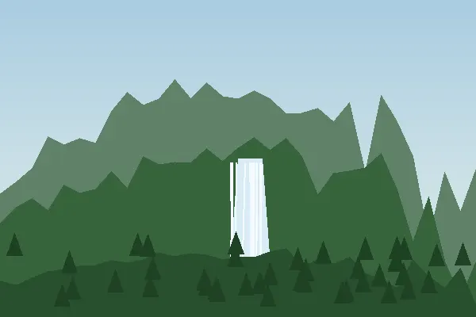

O Parque Nacional da Peneda-Gerês, criado em 1971, é o único parque nacional de Portugal. Tem carvalhais, cascatas e garranos, os cavalos selvagens do Norte.

Saber mais: Parque Nacional da Peneda-Gerês na Wikipédia (abre num separador novo).
© 2026 Ana Martins · Serras de Portugal